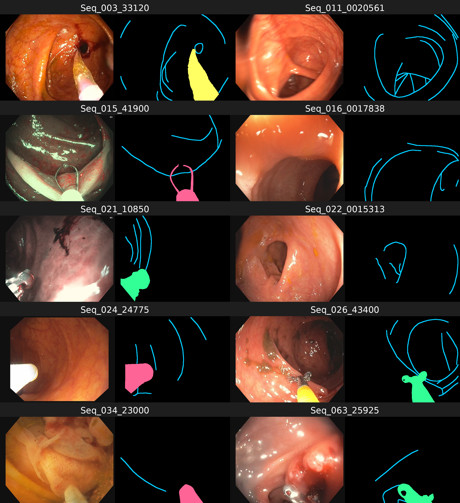

Frames are arranged in 40-frame temporal batches, enabling sequence-aware training and sampling.
Dataset & benchmark · EndoVis 2024
SegCol Dataset & Benchmark
A colonoscopy dataset for semantic segmentation of fold edges and instruments, with established supervised and active-learning benchmarks.

Image · fold edge · instrument mask
8,440released frames
04semantic targets
40frames per batch
640×480release resolution
01 / Overview
A dataset for anatomy-aware instrument segmentation.
Colonoscopy scenes combine subtle anatomical boundaries with diverse instruments, specular highlights, motion and occlusion.
Originally released through the EndoVis challenge at MICCAI 2024, SegCol contains 8,440 frames sampled from EndoMapper videos. It pairs fine fold-edge annotations with dense masks for three instrument classes and includes labelled and formerly unlabelled partitions for fully supervised and annotation-efficient learning.
02 / Dataset
Inside the data
RGB frames with pixel-level structure.
Frames span varied anatomy, tools, lighting, viewpoints and image quality. Semantic maps separate thin fold contours from three instrument categories.
Background: 0 · Captivator: 127 · Forceps: 128 · Balloon: 129 · Fold edges: 255.
Use 2,000 labelled frames for training, 560 for validation and 560 for testing; the 5,320-frame pool supports active learning.
Dataset partitionFramesCurrent labels
Labelled training2,000Public
Validation560Public
Formerly unlabelled training5,320Public
Test560Public
Total8,440All released

Fold edgesInstrument class 1Instrument class 2Instrument class 3
03 / Evaluation
Benchmark metrics
Overlap, boundary quality and topology.
The public evaluation implementation reports five complementary per-class measures, covering regions, contours, thresholds and centreline structure.
Region overlap at the selected operating point.
Precision–recall performance across confidence levels.
Best dataset-scale boundary F-score threshold.
Best per-image boundary F-score threshold.
Topology-aware overlap for thin structures.
04 / Benchmark tasks
Benchmark definition
Two established evaluation settings.
Task 01
Supervised segmentation
Train on labelled development data and predict fold edges together with three instrument categories on held-out colonoscopy frames.
- Fold-edge detection
- Multi-class tools
- Held-out evaluation
Task 02
Active learning
Select the 400 most informative frames from the 5,320-frame unlabelled training pool, then retrain the provided reference models.
- 400-frame budget
- Annotation efficiency
- Standardised retraining
05 / Baselines
Reference performance
Published baseline results.
DexiNed provides the fold-edge baseline; DeepLab provides the three instrument baselines. Scores below are Task 1 results reported in the public repository.
| Target | Model | ODS | OIS | Dice | AP | CLDice |
|---|---|---|---|---|---|---|
| Folds | DexiNed | 0.2461 | 0.2525 | 0.2684 | 0.0894 | 0.2736 |
| Tool 1 | DeepLab | 0.0546 | 0.0721 | 0.3636 | 0.1330 | 0.2440 |
| Tool 2 | DeepLab | 0.0489 | 0.0698 | 0.0930 | 0.0331 | 0.0414 |
| Tool 3 | DeepLab | 0.1214 | 0.1255 | 0.8041 | 0.6515 | 0.2837 |
06 / Resources
Dataset archive
Data, code and benchmark protocol.
The 2024 challenge has concluded. The complete dataset, including labels previously hidden during the challenge, is now integrated with the EndoMapper repository.
 Hawkes Institute
Hawkes Institute